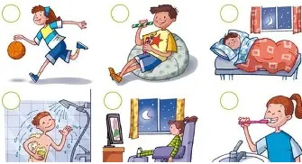
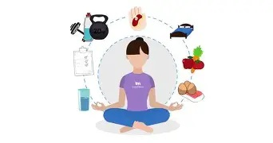

Los hábitos correctos son acciones o comportamientos positivos que las personas practican de manera constante para mantener una buena salud, bienestar y una vida ordenada.

CARACTERISTICAS DE LOS HABITOS CORRECTOS
Se practican diariamente
Son acciones que se repiten todos los días.
Mejoran la calidad de vida
Contribuyen a sentirse mejor física y emocionalmente.
Benefician la salud
Ayudan a cuidar el cuerpo y la mente.
TIPOS
🥗 Hábitos de alimentación: Comer alimentos saludables y mantener horarios de comida.
🧼 Hábitos de higiene: Lavarse las manos, bañarse y cepillarse los dientes.
🏃 Hábitos de actividad física: Realizar ejercicio o practicar algún deporte.
😴 Hábitos de descanso: Dormir las horas necesarias para recuperar energía.
📖 Hábitos de estudio: Organizar el tiempo para hacer tareas y estudiar.

FACTORES DE RIESGO
Comer demasiada comida chatarra.
Dormir pocas horas.
No hacer ejercicio.
Pasar demasiado tiempo en el celular o televisión.